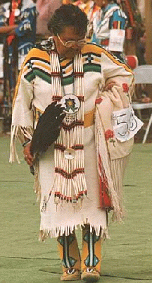

create_image/ [2, 3] — create an image from a GIF file
display_image/ [1, 3] — display an image
create_image(ImagePath, ImageName)
create_image(Interp, ImagePath, ImageName)
display_image(ImageName)
display_image(Interp, ImageName, Options)These routines provide simple access from ALS Prolog to the image routines of Tk. The current versions support GIF images, but the routines can be extended to any of the types Tk supports. To display images, one must specify a path to the image file, and must first produce an internal Tk form of the image. This is done with :
create_image(ImagePath, ImageName)
:-
create_image(tcli, ImagePath, ImageName).Assume that
pow_wow_dance.gifis a file in the current directory. Then the call
?- create_image('pow_wow_dance.gif', pow_wow).will create the internal form of this image and associate the name pow_wow with it.
Display of images which have been created is accomplished with :
display_image(ImageName)
:-
display_image(tcli, ImageName, [ ]).Thus, the call
? -display_image(pow_wow).produces

For the goal display_image(tcli, ImageName, Options), Options is a list equations describing properties of the image. The supported properties and their defaults are:
width=Width, default = 200),
height=Height, default = 200,
x=X, default = 75,
y=Y, default = 75,
border_width=BorderWidth, default = 2